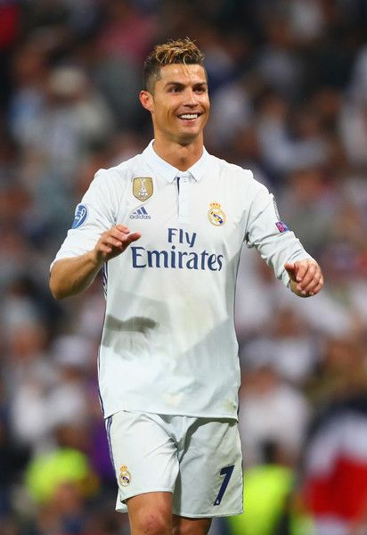
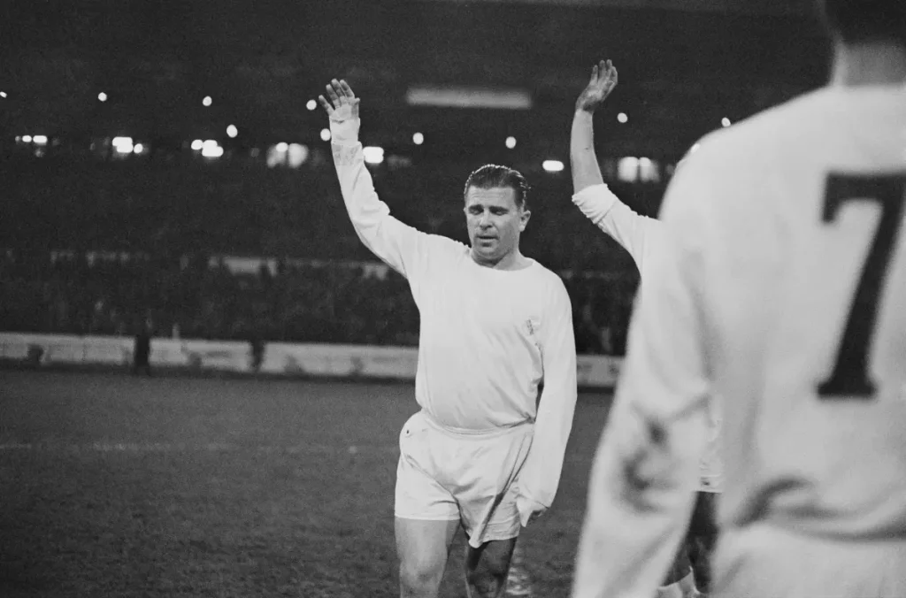
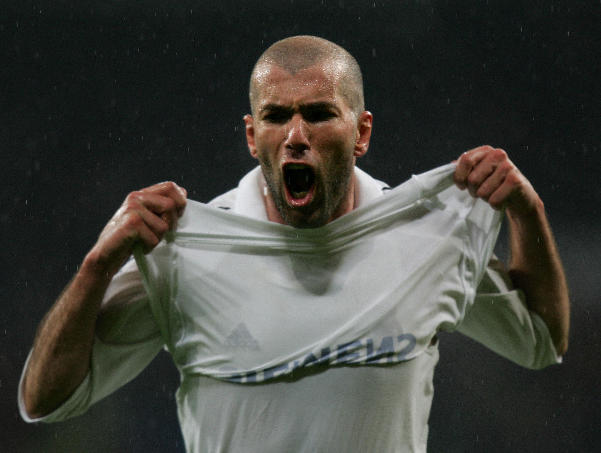
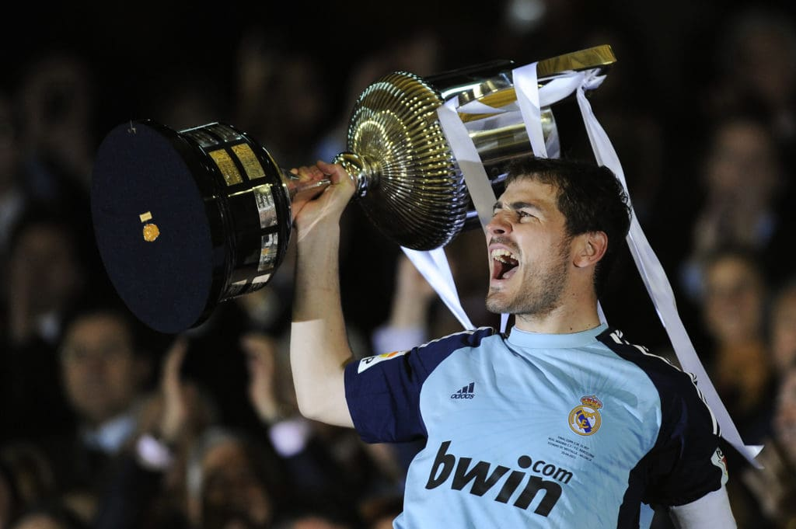
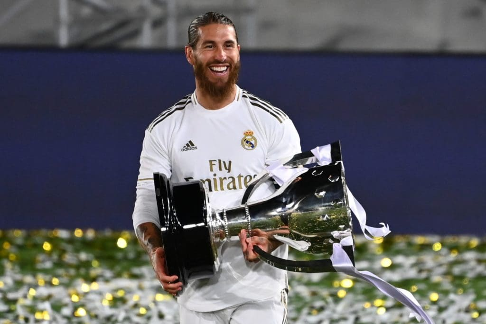
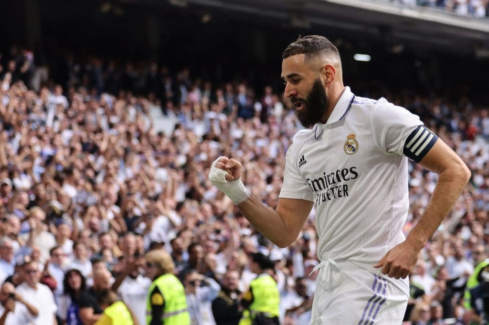
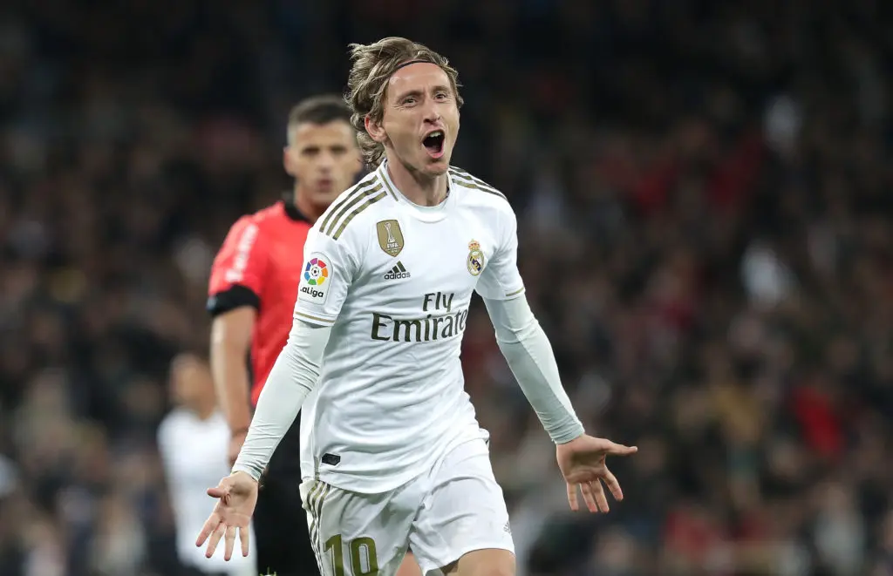

Alfredo Di Stéfano
Considerado el alma y el símbolo del Real Madrid, Di Stéfano fue fundamental en la conquista de cinco Copas de Europa consecutivas. Su liderazgo y versatilidad en el terreno de juego lo convierten en una leyenda del fútbol

Cristiano Ronaldo
El delantero portugués, reconocido como uno de los mejores futbolistas de todos los tiempos, dejó una marca imponente en el Real Madrid. Su capacidad goleadora, velocidad y habilidad lo convierten en el máximo goleador en la historia del club.
Raúl González
El eterno capitán y referente del Real Madrid, dejó una huella imborrable en la historia del club. Con una trayectoria destacada y una pasión inigualable por la camiseta blanca, Raúl se convirtió en el máximo goleador del club durante muchos años.

Paco Gento
El extremo izquierdo más exitoso de la historia del Real Madrid, Gento fue pieza clave en la conquista de seis Copas de Europa. Su velocidad y regate desequilibrante lo convirtieron en una pesadilla para las defensas rivales de la época.

Frenc Puskás
Puskás llegó al Real Madrid en 1958 y rápidamente se ganó el corazón de los aficionados con su capacidad para anotar goles de manera constante y espectacular. Su habilidad para encontrar espacios en el área y su precisión a la hora de definir le permitieron convertirse en el máximo goleador del equipo durante varios años.
Zinedine Zidane
Zinedine Zidane, una figura icónica en la historia del Real Madrid, dejó una marca imborrable tanto como jugador como entrenador. Su elegancia, visión de juego y capacidad para decidir partidos importantes lo convierten en uno de los máximos referentes del club.
Iker Casillas
El legendario guardameta español, dejó una huella imborrable en la historia del Real Madrid y se consagró como uno de los mejores porteros en la historia del fútbol. Conocido por su agilidad, reflejos felinos y carisma en el campo, Casillas se convirtió en un símbolo de liderazgo y grandes actuaciones bajo los tres palos.
Sergio Ramos
El tan cuestionado defensor español se convirtió en una figura icónica del Real Madrid gracias a su entrega, garra y goles decisivos. Durante su extensa trayectoria en el club, Ramos se consolidó como un pilar en la defensa y fue reconocido como uno de los mejores defensores del fútbol mundial.
Karim Benzema
Desde su llegada en 2009, Benzema ha sido un goleador prolífico a lo largo de su carrera en el club. Sus números hablan por sí mismos, ya que se ha convertido en el segundo máximo goleador en la historia del Real Madrid.
Luka Modric
Desde su llegada en 2012, el centrocampista croata ha tejido una narrativa única, convirtiéndose en el arquitecto de momentos memorables y el protagonista de triunfos cruciales para el Real Madrid. En 2018, alcanzó la cima de su carrera al recibir el Balón de Oro.
